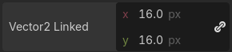

GDScript exported properties
In Godot, class members can be exported. This means their value gets saved along
with the resource (such as the scene) they're
attached to, and get transferred over when using RPCs.
They will also be available for editing in the property editor. Exporting is done by using
the @export annotation.
@export var number: int = 5
In that example the value 5 will be saved and visible in the property editor.
An exported variable must be initialized to a constant expression or have a type specifier in the variable. Some of the export annotations have a specific type and don't need the variable to be typed (see the Examples section below).
One of the fundamental benefits of exporting member variables is to have them visible and editable in the editor. This way, artists and game designers can modify values that later influence how the program runs. For this, a special export syntax is provided. Additionally, documentation comments can be used for tooltip descriptions, visible on mouse over.
Note
Exporting properties can also be done in other languages such as C#. The syntax varies depending on the language. See C# exported properties for information on C# exports.
Basic use
If the exported value assigns a constant or constant expression, the type will be inferred and used in the editor.
@export var number = 5
If there's no default value, you can add a type to the variable.
@export var number: int
Resources and nodes can be exported.
@export var resource: Resource
@export var node: Node
Even if a script is not executed in the editor, exported properties can still be edited. However, getters and setters will only be used if the script is in Tool mode.
Grouping exports
It is possible to group your exported properties inside the Inspector
with the @export_group
annotation. Every exported property after this annotation will be added to
the group. Start a new group or use @export_group("") to break out.
@export_group("My Properties")
@export var number = 3
The second argument of the annotation can be used to only group properties with the specified prefix.
Groups cannot be nested, use @export_subgroup to create subgroups within a group.
@export_subgroup("Extra Properties")
@export var string = ""
@export var flag = false
You can also change the name of your main category, or create additional categories in the property list with the @export_category annotation.
@export_category("Main Category")
@export var number = 3
@export var string = ""
@export_category("Extra Category")
@export var flag = false
Note
The list of properties is organized based on the class inheritance and new categories break that expectation. Use them carefully, especially when creating projects for public use.
Strings as paths
String as a path to a file. See @export_file.
@export_file var f
String as a path to a directory. See @export_dir.
@export_dir var f
String as a path to a file, custom filter provided as hint. See again @export_file.
@export_file("*.txt") var f
Using paths in the global filesystem is also possible, but only in scripts in tool mode.
String as a path to a PNG file in the global filesystem. See @export_global_file.
@export_global_file("*.png") var tool_image
String as a path to a directory in the global filesystem. See @export_global_dir.
@export_global_dir var tool_dir
The multiline annotation tells the editor to show a large input field for editing over multiple lines. See @export_multiline.
@export_multiline var text
Strings as input actions
String as an input action defined in the project's input map.
@export_custom(PROPERTY_HINT_INPUT_NAME) var my_input
String as an input action defined in the project's input map, plus default
built-in values such as ui_accept and ui_cancel.
@export_custom(PROPERTY_HINT_INPUT_NAME, "show_builtin") var my_input
String as an input action defined in the project's input map, plus arbitrary values that can manually be entered.
@export_custom(PROPERTY_HINT_INPUT_NAME, "loose_mode") var my_input
String as an input action defined in the project's input map, plus default
built-in values such as ui_accept and ui_cancel and arbitrary values
that can manually be entered.
@export_custom(PROPERTY_HINT_INPUT_NAME, "show_builtin,loose_mode") var my_input
Limiting editor input ranges
See @export_range for all of the following.
Allow integer values from 0 to 20.
@export_range(0, 20) var i
Allow integer values from -10 to 20.
@export_range(-10, 20) var j
Allow floats from -10 to 20 and snap the value to multiples of 0.2.
@export_range(-10, 20, 0.2) var k: float
The limits can be made to affect only the slider if you add the hints "or_less"
and/or "or_greater". If either these hints are used, it will be possible for
the user to enter any value or drag the value with the mouse when not using
the slider, even if outside the specified range.
@export_range(0, 100, 1, "or_less", "or_greater") var l: int
The "exp" hint can be used to make a value have an exponential slider
instead of a linear slider. This means that when dragging the slider towards
the right, changes will become progressively faster when dragging the mouse.
This is useful to make editing values that can be either very small or very large
easier, at the cost of being less intuitive.
@export_range(0, 100000, 0.01, "exp") var exponential: float
For values that are meant to represent an easing factor, use Floats with easing hint instead.
The "hide_slider" hint can be used to hide the horizontal bar that
appears below float properties, or the up/down arrows that appear besides
int properties:
@export_range(0, 1000, 0.01, "hide_slider") var no_slider: float
On the other hand, the "prefer_slider" hint can be used to show a horizontal
bar below int properties instead of up/down arrows:
@export_range(0, 100, 1, "prefer_slider") var with_slider: int
Adding suffixes and handling degrees/radians
A suffix can also be defined to make the value more self-explanatory in the
inspector. For example, to define a value that is meant to be configured as
"meters" (m) by the user:
@export_range(0, 100, 1, "suffix:m") var m: int
For angles that are stored in radians but displayed as degrees to the user, use the "radians_as_degrees" hint:
@export_range(0, 360, 0.1, "radians_as_degrees") var angle: float
This performs automatic conversion when the value is displayed or modified in
the inspector and also displays a degree (°) suffix. This approach is used
by Godot's own rotation properties throughout the editor.
If the angle is stored in degrees instead, use the "degrees" hint to display the degree symbol while disabling the automatic degrees-to-radians conversion when the value is modified from the inspector.
Linking vector values together
It is possible to link vector values together. When the user adjusts one of the vector's components, the other components are automatically adjusted proportionally. For example, this is useful to maintain the aspect ratio of a 2D sprite when adjusting its scale. This feature can be temporarily disabled by the user by clicking the link icon to the right of the property.
# Leave the hint string empty if you don't want to add a suffix.
@export_custom(PROPERTY_HINT_LINK, "suffix:px") var vector2_linked: Vector2 = Vector2(16, 16)
Results in:

Linked Vector2i property with the "px" suffix
This hint is effective on Vector2, Vector2i, Vector3, Vector3i, Vector4, and Vector4i. It can be used at the same time as a property suffix, as seen in the example above.
Floats with easing hint
Display a visual representation of the ease() function
when editing. See @export_exp_easing.
@export_exp_easing var transition_speed
Colors
Regular color given as red-green-blue-alpha value.
@export var col: Color
Color given as red-green-blue value (alpha will always be 1). See @export_color_no_alpha.
@export_color_no_alpha var col: Color
Nodes
Nodes can also be directly exported as properties in a script without having to use NodePaths:
# Allows any node.
@export var node: Node
# Allows any node that inherits from BaseButton.
# Custom classes declared with `class_name` can also be used.
@export var some_button: BaseButton
Exporting NodePaths like in Godot 3.x is still possible, in case you need it:
@export var node_path: NodePath
var node = get_node(node_path)
If you want to limit the types of nodes for NodePaths, you can use the @export_node_path annotation:
@export_node_path("Button", "TouchScreenButton") var some_button
Resources
@export var resource: Resource
In the Inspector, you can then drag and drop a resource file from the FileSystem dock into the variable slot.
Opening the inspector dropdown may result in an extremely long list of possible classes to create, however. Therefore, if you specify an extension of Resource such as:
@export var resource: AnimationNode
The drop-down menu will be limited to AnimationNode and all its derived classes.
Note
Using @export variables for Resource objects
makes them a dependency of the instance, meaning that all the resources
referenced by @export variables are loaded when the scene
containing the script is loaded. If you want to reference a
Resource object but load it manually when you need
it (which, for example, is often the case for
PackedScenes containing a whole level), use
@export_file or @export_file_path instead.
Exporting bit flags
See @export_flags.
Integers used as bit flags can store multiple true/false (boolean)
values in one property. By using the @export_flags annotation, they
can be set from the editor:
# Set any of the given flags from the editor.
@export_flags("Fire", "Water", "Earth", "Wind") var spell_elements = 0
You must provide a string description for each flag. In this example, Fire
has value 1, Water has value 2, Earth has value 4 and Wind
corresponds to value 8. Usually, constants should be defined accordingly (e.g.
const ELEMENT_WIND = 8 and so on).
You can add explicit values using a colon:
@export_flags("Self:4", "Allies:8", "Foes:16") var spell_targets = 0
Only power of 2 values are valid as bit flags options. The lowest allowed value is 1, as 0 means that nothing is selected. You can also add options that are a combination of other flags:
@export_flags("Self:4", "Allies:8", "Self and Allies:12", "Foes:16")
var spell_targets = 0
Export annotations are also provided for the physics, render, and navigation layers defined in the project settings:
@export_flags_2d_physics var layers_2d_physics
@export_flags_2d_render var layers_2d_render
@export_flags_2d_navigation var layers_2d_navigation
@export_flags_3d_physics var layers_3d_physics
@export_flags_3d_render var layers_3d_render
@export_flags_3d_navigation var layers_3d_navigation
Using bit flags requires some understanding of bitwise operations. If in doubt, use boolean variables instead.
Exporting enums
See @export_enum.
Properties can be exported with a type hint referencing an enum to limit their values to the values of the enumeration. The editor will create a widget in the Inspector, enumerating the following as "Thing 1", "Thing 2", "Another Thing". The value will be stored as an integer.
enum NamedEnum {THING_1, THING_2, ANOTHER_THING = -1}
@export var x: NamedEnum
Integer and string properties can also be limited to a specific list of values using
the @export_enum annotation.
The editor will create a widget in the Inspector, enumerating the following as Warrior,
Magician, Thief. The value will be stored as an integer, corresponding to the index
of the selected option (i.e. 0, 1, or 2).
@export_enum("Warrior", "Magician", "Thief") var character_class: int
You can add explicit values using a colon:
@export_enum("Slow:30", "Average:60", "Very Fast:200") var character_speed: int
If the type is String, the value will be stored as a string.
@export_enum("Rebecca", "Mary", "Leah") var character_name: String
If you want to set an initial value, you must specify it explicitly:
@export_enum("Rebecca", "Mary", "Leah") var character_name: String = "Rebecca"
Exporting arrays
Exported arrays can have initializers, but they must be constant expressions.
If the exported array specifies a type which inherits from Resource, the array values can be set in the inspector by dragging and dropping multiple files from the FileSystem dock at once.
The default value must be a constant expression.
@export var a = [1, 2, 3]
Exported arrays can specify type (using the same hints as before).
@export var ints: Array[int] = [1, 2, 3]
# Nested typed arrays such as `Array[Array[float]]` are not supported yet.
@export var two_dimensional: Array[Array] = [[1.0, 2.0], [3.0, 4.0]]
You can omit the default value, but it would then be null if not assigned.
@export var b: Array
@export var scenes: Array[PackedScene]
Arrays with specified types which inherit from resource can be set by drag-and-dropping multiple files from the FileSystem dock.
@export var textures: Array[Texture] = []
@export var scenes: Array[PackedScene] = []
Packed arrays also work, but only if initialized empty:
@export var vector3s = PackedVector3Array()
@export var strings = PackedStringArray()
Other export variants can also be used when exporting arrays:
@export_range(-360, 360, 0.001, "degrees") var laser_angles: Array[float] = []
@export_file("*.json") var skill_trees: Array[String] = []
@export_color_no_alpha var hair_colors = PackedColorArray()
@export_enum("Espresso", "Mocha", "Latte", "Capuccino") var barista_suggestions: Array[String] = []
@export_storage
See @export_storage.
By default, exporting a property has two effects:
makes the property stored in the scene/resource file (PROPERTY_USAGE_STORAGE);
adds a field to the Inspector (PROPERTY_USAGE_EDITOR).
However, sometimes you may want to make a property serializable, but not display it in the editor to prevent unintentional changes and cluttering the interface.
To do this you can use @export_storage. This can be useful for @tool scripts. Also the property value is copied when Resource.duplicate() or Node.duplicate() is called, unlike non-exported variables.
var a # Not stored in the file, not displayed in the editor.
@export_storage var b # Stored in the file, not displayed in the editor.
@export var c: int # Stored in the file, displayed in the editor.
@export_custom
If you need more control than what's exposed with the built-in @export
annotations, you can use @export_custom instead. This allows defining any
property hint, hint string and usage flags, with a syntax similar to the one
used by the editor for built-in nodes.
For example, this exposes the altitude property with no range limits but an
m (meter) suffix defined:
@export_custom(PROPERTY_HINT_NONE, "suffix:m") var altitude: float
The above is normally not feasible with the standard @export_range syntax,
since it requires defining a range.
See the class reference for a list of parameters and their allowed values.
Warning
When using @export_custom, GDScript does not perform any validation on
the syntax. Invalid syntax may have unexpected behavior in the inspector.
Setting exported variables from a tool script
When changing an exported variable's value from a script in Tool mode, the value in the inspector won't be updated automatically. To update it, call notify_property_list_changed() after setting the exported variable's value.
Reading an exported variable's value early on
If you read an exported variable's value in _init(), it will return the default value specified in the export annotation instead of the value that was set in the inspector. This is because assigning values from the saved scene/resource file occurs after object initialization; until then, the default value is used.
To get the value that was set in the inspector (and therefore saved in the scene/resource file),
you need to read it after the object is constructed, such as in
Node._ready(). You can also read the value
in a setter that's defined on the exported property, which is useful in
custom resources where _ready() is not available:
# Set this property to 3 in the inspector.
@export var exported_variable = 2:
set(value):
exported_variable = value
print("Inspector-set value: ", exported_variable)
func _init():
print("Initial value: ", exported_variable)
Results in:
Initial value: 2
Inspector-set value: 3
Advanced exports
Not every type of export can be provided on the level of the language itself to avoid unnecessary design complexity. The following describes some more or less common exporting features which can be implemented with a low-level API.
Before reading further, you should get familiar with the way properties are handled and how they can be customized with _set(), _get(), and _get_property_list() methods as described in Accessing data or logic from an object.
See also
For binding properties using the above methods in C++, see Binding properties using _set/_get/_get_property_list.
Warning
The script must operate in the @tool mode so the above methods
can work from within the editor.